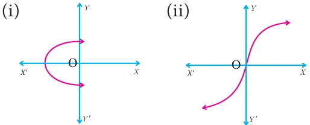
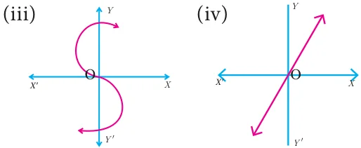

- Determine whether the graph given below represent functions. Give reason for your answers concerning each graph.


- Let \(f : A \to B\) be a function defined by \(f(x) = \dfrac{x}{2} - 1\), where \(A = \{2, 4, 6, 10, 12\}\), \(B = \{0, 1, 2, 4, 5, 9\}\). Represent \(f\) by
- set of ordered pairs
- a table
- an arrow diagram
- a graph
- Represent the function \(f = \{(1,2), (2,2), (3,2), (4,3), (5,4)\}\) through
- an arrow diagram
- a table form
- a graph
- Show that the function \(f : \mathbb{N} \to \mathbb{N}\) defined by \(f(x) = 2x - 1\) is one-one but not onto.
- Show that the function \(f : \mathbb{N} \to \mathbb{N}\) defined by \(f(m) = m^2 + m + 3\) is one-one function.
- Let \(A = \{1, 2, 3, 4\}\) and \(B = \mathbb{N}\). Let \(f : A \to B\) be defined by \(f(x) = x^3\) then,
- find the range of \(f\)
- identify the type of function
- In each of the following cases state whether the function is bijective or not. Justify your answer.
- \(f : \mathbb{R} \to \mathbb{R}\) defined by \(f(x) = 2x + 1\)
- \(f : \mathbb{R} \to \mathbb{R}\) defined by \(f(x) = 3 - 4x^2\)
- Let \(A = \{-1, 1\}\) and \(B = \{0, 2\}\). If the function \(f : A \to B\) defined by \(f(x) = ax + b\) is an onto function? Find \(a\) and \(b\).
- If the function \(f\) is defined by \(f(x) = \begin{cases} x + 2; & x > 1 \\ 2; & -1 \le x \le 1 \\ x - 1; & -3 < x < -1 \end{cases}\) find the values of
- \(f(3)\)
- \(f(0)\)
- \(f(-1.5)\)
- \(f(2) + f(-2)\)
- A function \(f : [-5, 9] \to \mathbb{R}\) is defined as follows:
\(f(x) = \begin{cases} 6x + 1; & -5 \le x < 2 \\ 5x^2 - 1; & 2 \le x < 6 \\ 3x - 4; & 6 \le x \le 9 \end{cases}\)
Find
- \(f(-3) + f(2)\)
- \(f(7) - f(1)\)
- \(2f(4) + f(8)\)
- \(\dfrac{2f(-2) - f(6)}{f(4) + f(-2)}\)
- The distance \(S\) an object travels under the influence of gravity in time \(t\) seconds is given by \(S(t) = \dfrac{1}{2}gt^2 + at + b\) where, (\(g\) is the acceleration due to gravity), \(a, b\) are constants. Verify wheather the function \(S(t)\) is one-one or not.
- The function ‘\(t\)’ which maps temperature in Celsius \((C)\) into temperature in Fahrenheit \((F)\) is defined by \(t(C) = F\) where \(F = \dfrac{9}{5}C + 32\). Find,
- \(t(0)\)
- \(t(28)\)
- \(t(-10)\)
- the value of \(C\) when \(t(C) = 212\)
- the temperature when the Celsius value is equal to the Farenheit value.
Chapter 1 · Relations and Functions